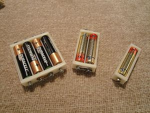
Tres modelos diferentes generados a partir del portapilas parametrizado (click para ampliar)
Contenido
[ocultar]Introducción
Portapilas parametrizado diseñado con OpenScad. Es una pieza genérica a partir de la cual se pueden obtener portapilas concretos. Los parámetros de entrada son:
- typ: Tipo de pilas. Los valores pueden ser: AA, AAA, C o D;
- num: Número de pilas
- ser: Número de pilas en serie
Para realizar la conexión eléctrica entre las pilas y el exterior se utilizan tuercas empotradas. Es un método fiable y rápido de montar.
Información
| Dimensiones | Depende del portapilas generado. Si es para 4 pilas AAA: 49x51x13 mm |
| Material | ABS (Acrilonitrilo Butadieno Estireno) Es el mismo plástico de las piezas de Lego |
| Tiempo de impresión | Depende del portapilas. El de 4xAAA tarda: 30 minutos |
Descarga
Versión 1.0
| battery-pack-contact-nuts.scad | Portapilas genérico. Fichero fuente en Openscad |
| battery-pack-4-AAA.stl | Portapilas para 4 pilas AAA (STL) |
| attery-pack-2-AAA.stl | Portapilas para 2 pilas AAA (STL) |
- Diseñada con OpenScad
- Gcode generado con: Replicatorg 0022 (perfil SF31-cupcake-acrylic-platform-ABS (modificado), skeinforge 031)
Fotos
| 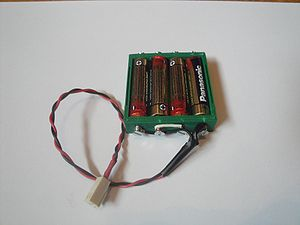 Portapilas. Configuración para 4 pilas AAA. Vista frontal (click para ampliar) |
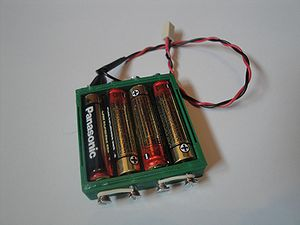 Portapilas. Configuración para 4 pilas AAA. Vista trasera (click para ampliar) |


| 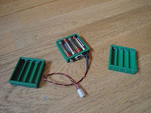 Tres portapilas para 4 pilas AAA. Uno montado (en el centro). Dos sin montar en los laterales (click para ampliar) |
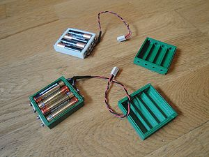 4 Portapilas para 4 pilas AAA. Dos montados y dos sin montar (click para ampliar) |


| 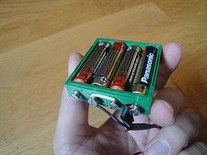 Portapilas para 4 pilas AAA (click para ampliar) |

Repositorio
- Repositorio SVN: http://svn.iearobotics.com/3D_objects/battery-pack/
Para obtener la última versión teclear:
svn co http://svn.iearobotics.com/3D_objects/battery-pack/v1.0
Montaje
Ejemplo de montaje de un portapilas de 4 pilas AAA
- Inicio: Imprimir el portapilas y obtener todo el material necesario: : portapilas, 4 pilas AAA, 4 tornillos M3 de 6mm de largo, 4 tuercas M3 y un tornillo M3 de 12mm
| 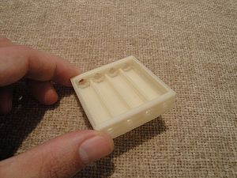 Imprimir el portapilas (click para ampliar) |
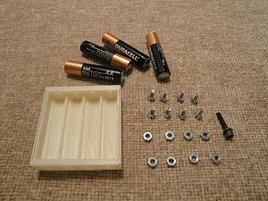 Material necesario (click para ampliar) |


- Paso 1: Colocar las tuercas empotradas
- Hay una manera muy fácil de colocar la tuerca de forma que se quede enganchada y no se salga. Usando el tornillo de 12mm insertarlo por el agujero y enroscar la tuerca. Dar vueltas hasta que la tuerca entre por el hueco de plástico. Enroscar fuerte el tornillo para que la tuerca entre en el hueco.
| 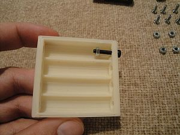 Paso 1-1: Insertar un tornillo M3 largo y enroscar una tuerca (click para ampliar) |
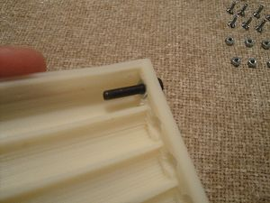 Paso 1-2: Apretar el tornillo hasta que la tuerca entre en el hueco (click para ampliar) |


| 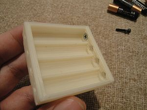 Paso 1-3: Sacar el tornillo. La tuerca quedará empotrada (click para ampliar) |
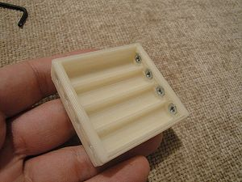 Paso 1-4: Repetir el proceso para el resto de tuercas (click para ampliar) |


- Paso 2: Insertar las pilas y colocar los tornillos
| 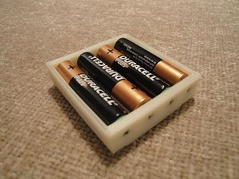 Paso 2-1: Insertar las pilas. ¡Ojo! Colocarlas con orientación alternada. Una pila con el + en un lado y la siguiente con el + apuntando en sentido contrario (click para ampliar) |
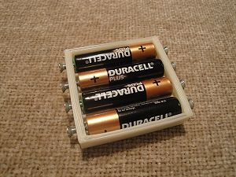 Paso 2-2: Insertar los tornillos (click para ampliar) |


- Paso 3: Conexiones eléctricas
- Las conexiones eléctricas se establecen de manera que todas las pilas quedan conectadas en "serie". Asegurarse que el positivo de una pila esté conectada con el negativo de la siguiente.
| 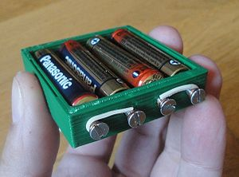 Paso 3-1: Colocar dos cables arrollados a los tornillos, en uno de los lados. Se unirán negativo con positivo (click para ampliar) |


- Una vez unidas las pilas, colocar dos cables (negro y rojo) en los tornillos corresponientes al polo negativo (pila de la izquierda) y el positivo (pila de la derecha)
- Paso 4: Comprobaciones
- Usar un polímetro para comprobar que las conexiones son correctas.
| 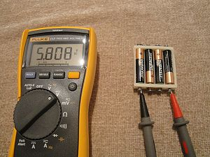 Comprobando las conexiones con un polímetro (click para ampliar) |


Enlaces
Autores
- Nikolaus Gradwohl: Versión inicial
- Juan González: Tuercas empotradas y refactorización del código
- Chris Thompson: Conexión de pilas en serie
Licencia
| |
Historia
- 30/Enero/2011:
- Obijuan sube a thingiverse la nueva versión con el parche de Nikolaus
- Publicado el portapilas en el wiki (Blog)
- 14/Enero/2011: Nikolaus Gradwohl publica un parche para poder añadir pilas en serie
- 11/Dic/2011: Obijuan creó una nueva versión del portapilas parametrizable con tuercas empotradas y la subió a thingiverse.
- 08/Dic/2011: Obijuan probó la idea de utilizar tuercas empotradas para hacer las conexiones eléctricas. Experimento con este portapilas sencillo de 1 pila. La idea funcionó y gustó. La publicaron en esta entrada del blog de makerbot
- 07/Dic/2011: Nikolaus Gradwohl Subió a Thingiverse la primera versión del portapilas parametrizado. La idea gustó y la publicaron en el blog de thingiverse, en esta entrada.
Noticias
- 30/Ene/2011: Publicada esta página (Blog)
- 29/Dic/2010: Comenzada esta página